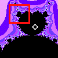

| We investigate the cycles associated with several features of the quadratic and
cubic Mandelbrot sets by seeking cycles in corresponding Julia sets. |
| First we do three examples with the quadratic Mandelbrot set. |
|
| 1. First we look at a 3-cycle disc and two midgets in the antenna above that
disc. We find the periods of the cardioids of those midgets. Are those periods multiples of 3? Click the picture to see. |
|
| 2. Next, we look at the 3-cycle midget and find the period of a disc
attached to the cardioid. Is that period a multiple of 3? |
|
| 3. Finally, we look at 4- and 5-cycle discs, and find the period of a disc attached to
the 5-cycle disc and of a midget in the antenna above the 5-cycle disc. |
|
|
| Next we do an example with the cubic Mandelbrot set. |
| 4. Now we find the periods of some features and midgets around the
cubic Mandelbrot set. Do we observe the same rules seen for the quadratic Mandelbrot set? |
 |
|